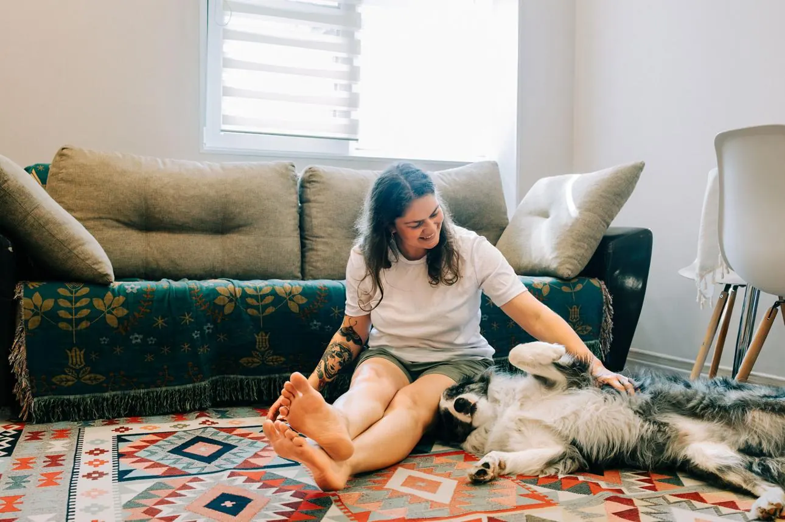

Living by Design: Individual Living & Support
Explore living in your own home, living alone or sharing with people you choose. We design support around your life, including Individualised Living Options (ILO), individual Supported Independent Living (SIL) and eligible daily living supports.
Explore Living by Design